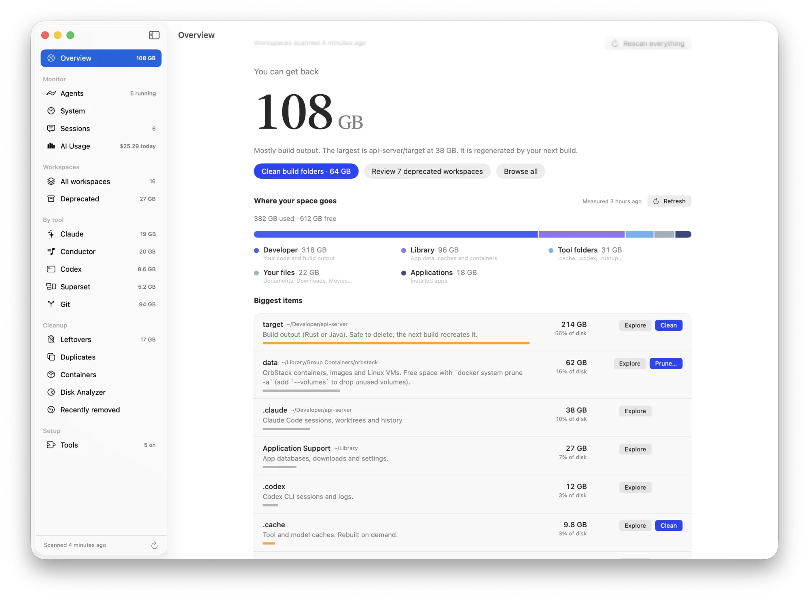
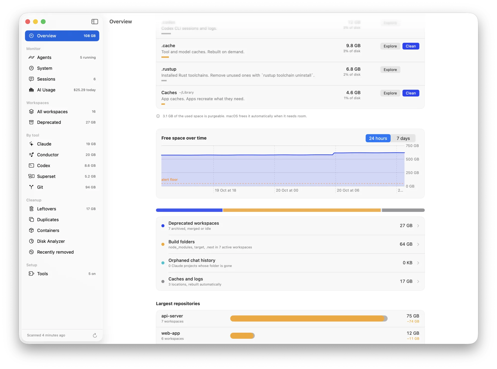
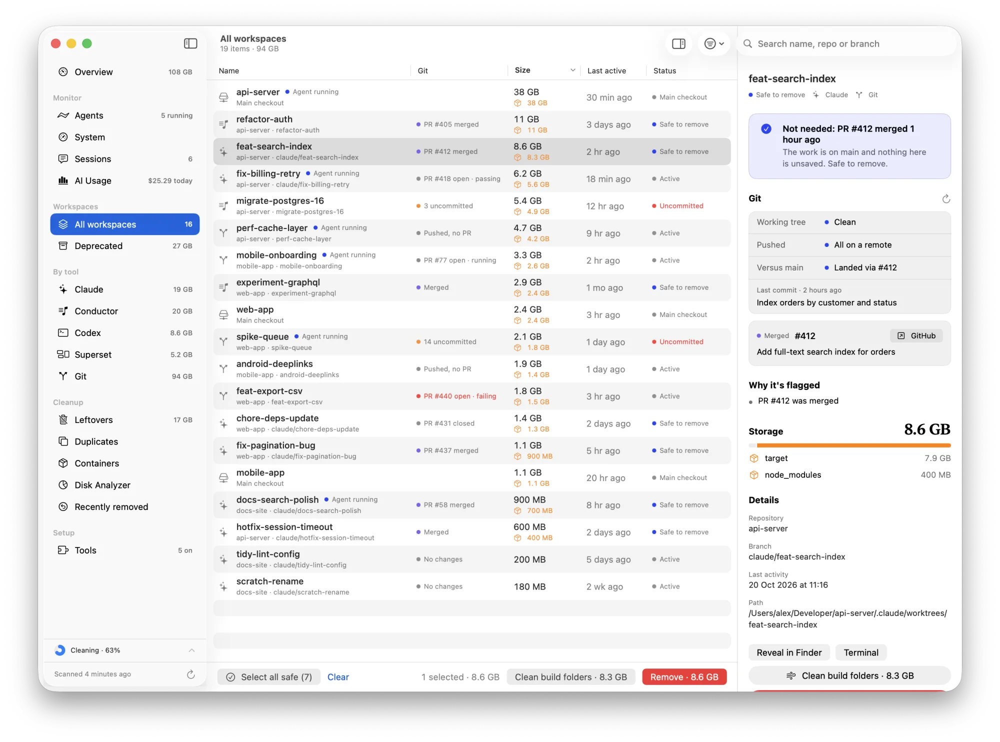
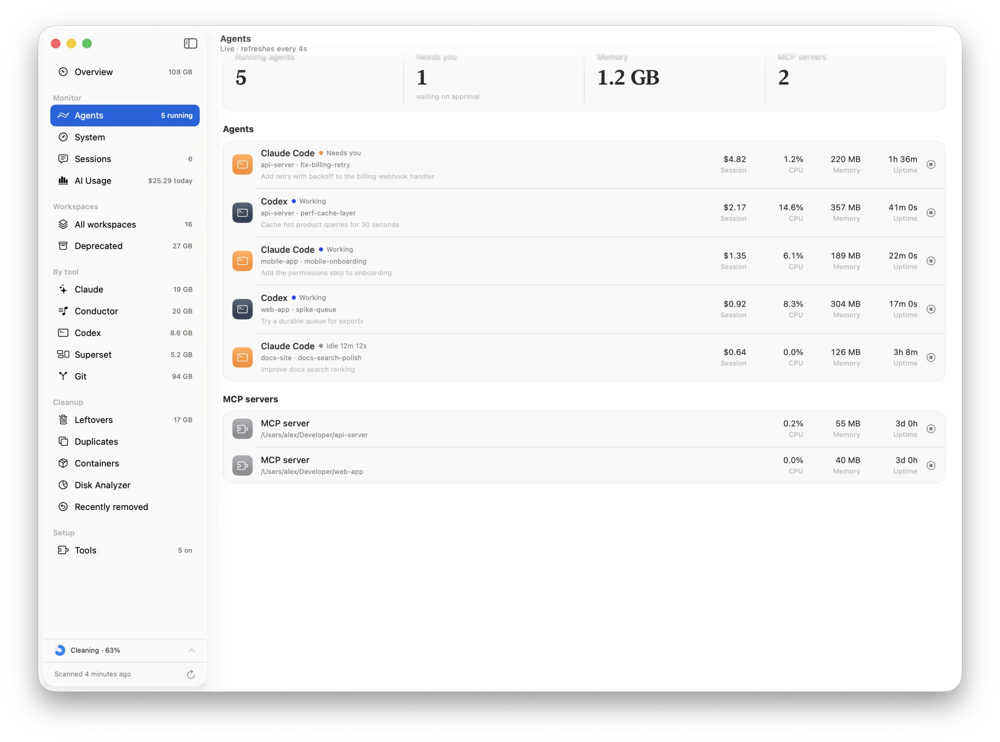
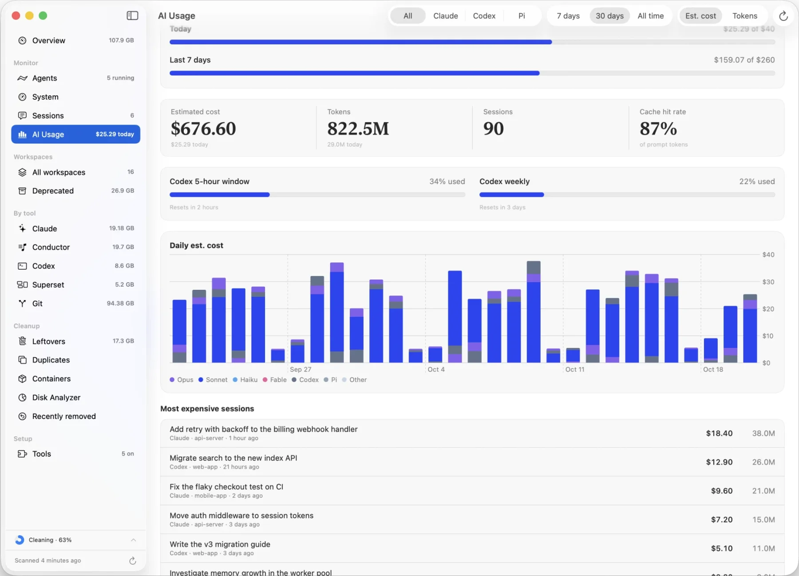
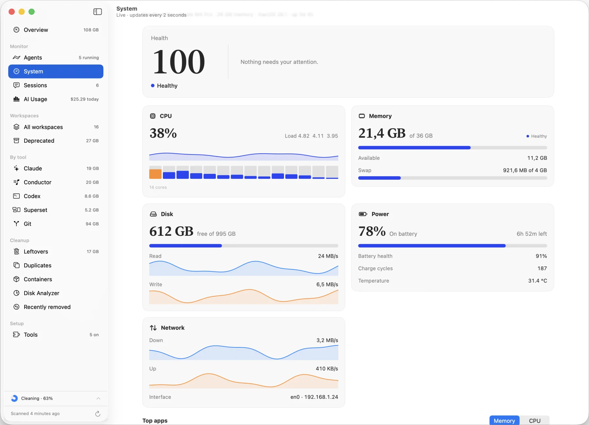
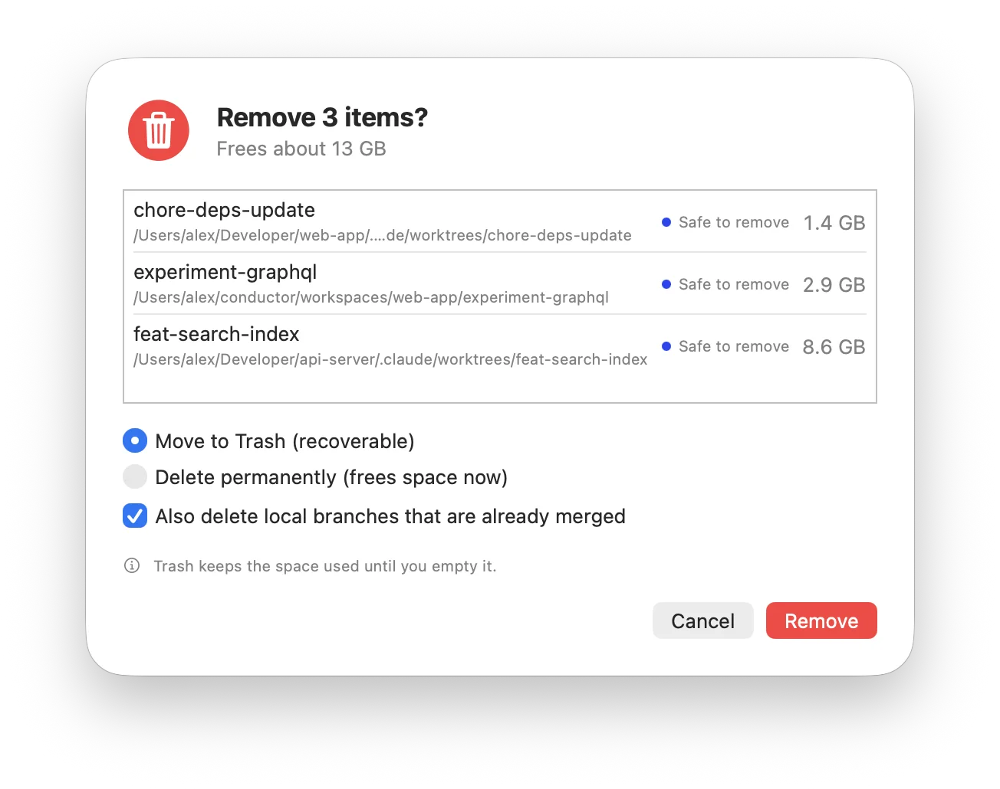

Your coding agents leave gigabytes behind.
AI Keeper shows which worktrees, build folders and caches Claude, Codex, Conductor and other agents left on your Mac, which are safe to delete, and clears them in the background.
Free. Requires macOS 14 or later. Apple Silicon and Intel.

See it in action.
A 45-second walkthrough: where the disk went, which worktrees can go, and a cleanup running in the background.
See where the disk went.
One bar splits your disk into developer files, library, tool folders and apps. Below it, the biggest folders each get a plain explanation, and a Clean button when the contents can be rebuilt.

Know which worktrees are still needed.
Each workspace shows its Git state and pull request. A merged PR with a clean tree is safe to remove. Unpushed commits and uncommitted files are flagged, with the reason beside them.

Watch what is running, and what it costs.
Agents lists every running Claude, Codex and other agent with its CPU, memory and session cost. Usage charts daily spend by model from logs on your Mac, and warns you at the budget you set.



A health check in the sidebar.
CPU, memory, disk and network in one live view. Developer processes are grouped, so a runaway build stands out.
Also in the app
Leftovers
Folders from tools you removed, found and sized.
Duplicates
Identical large files, checked by content before anything is offered.
Containers
Docker and OrbStack images, volumes and build cache, with a safe prune.
Recently removed
Unsaved work is saved before a workspace is deleted, so you can restore it.
Background cleanup
Cleanups run in the sidebar with progress while you keep working.
Command line and MCP
Scan from the terminal, or let your agent ask what is safe to clean.
Nothing is deleted before you see it.
Each cleanup opens a list of exactly what will be removed and how much space it frees. Unpushed and uncommitted work is saved first, and workspaces with a running agent are skipped.
Everything runs on your Mac. No account needed.
